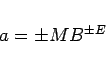
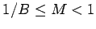
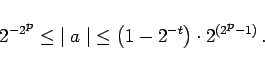
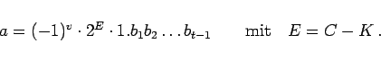
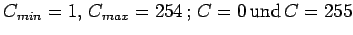

Inhalt Index DeskTop Bronstein

 Numerische Mathematik Nutzung von Computern Interne Zeichendarstellung Interne Zahlendarstellung
Numerische Mathematik Nutzung von Computern Interne Zeichendarstellung Interne Zahlendarstellung


Für die Darstellung von Gleitpunktzahlen sind prinzipiell zwei verschiedene Formen üblich, wobei die interne Realisierung im Detail variieren kann.
Bei der ersten Form werden die Vorzeichen für den Exponenten E und für die Mantisse M der Zahl a
|  | (19.260) |
gesondert gespeichert. Dabei wird meist der Exponent E so gewählt, daß für die Mantisse die Bedingung  gilt. Man spricht dann von der normalisierten halblogarithmischen Form.
Mit den angegebenen Parametern ergibt sich folgender absoluter Wertebereich für die Gleitpunktzahlen:
|  | (19.261) |
Die zweite (heute übliche) Form der Gleitpunktdarstellung entspricht dem 1985 verabschiedeten IEEE-Standard (Institute of Electrical and Electronics Engineers). Dieser befaßt sich mit der Normung der Rechnerarithmetik und enthält Festlegungen zu den Formaten, dem Rundungsverhalten, den arithmetischen Operatoren, der Konvertierung von Zahlenwerten, zu Vergleichsoperatoren und zur Behandlung von Ausnahmefällen wie Bereichsüberschreitungen. Dort wird für die Gleitpunktzahl folgende Form festgelegt:
Die Charakteristik C wird aus dem Exponenten E durch Addition einer geeigneten Konstanten K gebildet. Diese wird so gewählt, daß für die Charakteristik nur positive Werte auftreten. Die darstellbare Zahl lautet:
|  | (19.262) |
Dabei gilt:  sind reserviert.
Der Standard gibt zwei Basisformate (einfachgenaue und doppeltgenaue Gleitpunktzahlen) vor, läßt aber auch erweiterte Formate zu. Die folgende Tabelle enthält die Parameter für die Basisformate des IEEE-Standards.
| Parameter | einfachgenau | doppeltgenau |
| Wortlänge in Bits | 32 | 64 |
| maximaler Exponent Emax | +127 | +1023 |
| minimaler Exponent Emin | -126 | -1022 |
| Konstante K | +127 | +1023 |
| Anzahl Bits des Exponenten | 8 | 11 |
| Anzahl Bits der Mantisse | 24 | 53 |